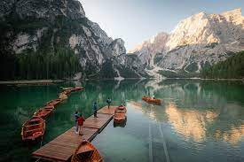

Lake
Nature
Lago di Braies
Lago di Braies, also known as Pragser Wildsee, is a stunning alpine lake located in the Prags Dolomites in South Tyrol, northern Italy. It is situated within the Fanes-Sennes-Prags Nature Park, surrounded by the picturesque Dolomite mountains
Read more